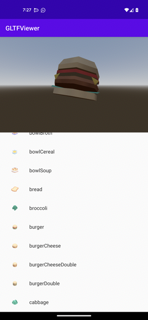

Godot Android library
The Godot Engine for Android platforms is designed to be used as an Android library. This architecture enables several key features on Android platforms:
Ability to integrate the Gradle build system within the Godot Editor, which provides the ability to leverage more components from the Android ecosystem such as libraries and tools
Ability to make the engine portable and embeddable:
Key in enabling the port of the Godot Editor to Android and mobile XR devices
Key in allowing the integration and reuse of Godot's capabilities within existing codebase
Below we describe some of the use-cases and scenarios this architecture enables.
Using the Godot Android library
The Godot Android library is packaged as an AAR archive file and hosted on MavenCentral along with its documentation.
It provides access to Godot APIs and capabilities on Android platforms for the following non-exhaustive use-cases.
Godot Android plugins
Android plugins are powerful tools to extend the capabilities of the Godot Engine by tapping into the functionality provided by Android platforms and ecosystem.
An Android plugin is an Android library with a dependency on the Godot Android library which the plugin uses to integrate into the engine's lifecycle and to access Godot APIs, granting it powerful capabilities such as GDExtension support which allows to update / mod the engine behavior as needed.
For more information, see Godot Android plugins.
Embedding Godot in existing Android projects
The Godot Engine can be embedded within existing Android applications or libraries, allowing developers to leverage mature and battle-tested code and libraries better suited to a specific task.
The hosting component is responsible for driving the engine lifecycle via Godot's Android APIs. These APIs can also be used to provide bidirectional communication between the host and the embedded Godot instance allowing for greater control over the desired experience.
We showcase how this is done using a sample Android app that embeds the Godot Engine as an Android view, and uses it to render 3D glTF models.
The GLTF Viewer sample app uses an Android RecyclerView component to create a list of glTF items, populated from Kenney's Food Kit pack. When an item on the list is selected, the app's logic interacts with the embedded Godot Engine to render the selected glTF item as a 3D model.

The sample app source code can be found on GitHub. Follow the instructions on its README to build and install it.
Below we break-down the steps used to create the GLTF Viewer app.
Warning
Currently only a single instance of the Godot Engine is supported per process. You can configure the process the Android Activity runs under using the android:process attribute.
Warning
Automatic resizing / orientation configuration events are not supported and may cause a crash. You can disable those events:
By locking to a specific orientation using the android:screenOrientation attribute.
By declaring that the Activity will handle these configuration events using the android:configChanges attribute.
1. Create the Android app
Note
The Android sample app was created using Android Studio and using Gradle as the build system.
The Android ecosystem provides multiple tools, IDEs, build systems for creating Android apps so feel free to use what you're familiar with, and update the steps below accordingly (contributions to this documentation are welcomed as well!).
Set up an Android application project. It may be a brand new empty project, or an existing project
Add the maven dependency for the Godot Android library
If using
gradle, add the following to thedependencysection of the app's gradle build file. Make sure to update<version>to the latest version of the Godot Android library:
implementation("org.godotengine:godot:<version>")
If using
gradle, include the followingaaptOptionsconfiguration under theandroid > defaultConfigsection of the app's gradle build file. Doing so allowsgradleto include Godot's hidden directories when building the app binary.If your build system does not support including hidden directories, you can configure the Godot project to not use hidden directories by deselecting Application > Config > Use Hidden Project Data Directory in the Project Settings.
android {
defaultConfig {
// The default ignore pattern for the 'assets' directory includes hidden files and
// directories which are used by Godot projects, so we override it with the following.
aaptOptions {
ignoreAssetsPattern "!.svn:!.git:!.gitignore:!.ds_store:!*.scc:<dir>_*:!CVS:!thumbs.db:!picasa.ini:!*~"
}
...
Create / update the application's Activity that will be hosting the Godot Engine instance. For the sample app, this is MainActivity
The host Activity should implement the GodotHost interface
The sample app uses Fragments to organize its UI, so it uses GodotFragment, a fragment component provided by the Godot Android library to automatically host and manage the Godot Engine instance.
private var godotFragment: GodotFragment? = null override fun onCreate(savedInstanceState: Bundle?) { super.onCreate(savedInstanceState) setContentView(R.layout.activity_main) val currentGodotFragment = supportFragmentManager.findFragmentById(R.id.godot_fragment_container) if (currentGodotFragment is GodotFragment) { godotFragment = currentGodotFragment } else { godotFragment = GodotFragment() supportFragmentManager.beginTransaction() .replace(R.id.godot_fragment_container, godotFragment!!) .commitNowAllowingStateLoss() } ...
Note
The Godot Android library also provide GodotActivity, an Activity component that can be extended to automatically host and manage the Godot Engine instance.
Alternatively, applications can directly create a Godot instance, host and manage it themselves.
Using GodotHost#getHostPlugins(...), the sample app creates a runtime GodotPlugin instance that's used to send signals to the
gdscriptlogicThe runtime
GodotPlugincan also be used bygdscriptlogic to access JVM methods. For more information, see Godot Android plugins.
Add any additional logic that will be used by your application
For the sample app, this includes adding the ItemsSelectionFragment fragment (and related classes), a fragment used to build and show the list of glTF items
Open the
AndroidManifest.xmlfile, and configure the orientation if needed using the android:screenOrientation attributeIf needed, disable automatic resizing / orientation configuration changes using the android:configChanges attribute
<activity android:name=".MainActivity"
android:screenOrientation="fullUser"
android:configChanges="orientation|screenSize|smallestScreenSize|screenLayout"
android:exported="true">
...
</activity>
2. Create the Godot project
Note
On Android, Godot's project files are exported to the assets directory of the generated apk binary.
We leverage that architecture to bind our Android app and Godot project together by creating the Godot project in the Android app's assets directory.
Note that it's also possible to create the Godot project in a separate directory and export it as a PCK or ZIP file
to the Android app's assets directory.
Using this approach requires passing the --main-pack <pck_or_zip_filepath_relative_to_assets_dir> argument to the hosted Godot Engine instance using GodotHost#getCommandLine().
Example:
@Override
public List<String> getCommandLine(){
List<String> results = new ArrayList<>();
results.addAll(super.getCommandLine());
results.add("--main-pack");
results.add("res://foo.pck");
return results;
}
The instructions below and the sample app follow the first approach of creating the Godot project in the Android app's assets directory.
As mentioned in the note above, open the Godot Editor and create a Godot project directly (no subfolder) in the
assetsdirectory of the Android application projectSee the sample app's Godot project for reference
Configure the Godot project as desired
Make sure the orientation set for the Godot project matches the one set in the Android app's manifest
For Android, make sure textures/vram_compression/import_etc2_astc is set to true
Update the Godot project script logic as needed
For the sample app, the script logic queries for the runtime
GodotPlugininstance and uses it to register for signals fired by the app logicThe app logic fires a signal every time an item is selected in the list. The signal contains the filepath of the glTF model, which is used by the
gdscriptlogic to render the model.
extends Node3D # Reference to the gltf model that's currently being shown. var current_gltf_node: Node3D = null func _ready(): # Default asset to load when the app starts _load_gltf("res://gltfs/food_kit/turkey.glb") var appPlugin = Engine.get_singleton("AppPlugin") if appPlugin: print("App plugin is available") # Signal fired from the app logic to update the gltf model being shown appPlugin.connect("show_gltf", _load_gltf) else: print("App plugin is not available") # Load the gltf model specified by the given path func _load_gltf(gltf_path: String): if current_gltf_node != null: remove_child(current_gltf_node) current_gltf_node = load(gltf_path).instantiate() add_child(current_gltf_node)
3. Build and run the app
Once you complete configuration of your Godot project, build and run the Android app.
If set up correctly, the host Activity will initialize the embedded Godot Engine on startup.
The Godot Engine will check the assets directory for project files to load (unless configured to look for a main pack), and will proceed to run the project.
While the app is running on device, you can check Android logcat to investigate any errors or crashes.
For reference, check the build and install instructions for the GLTF Viewer sample app.